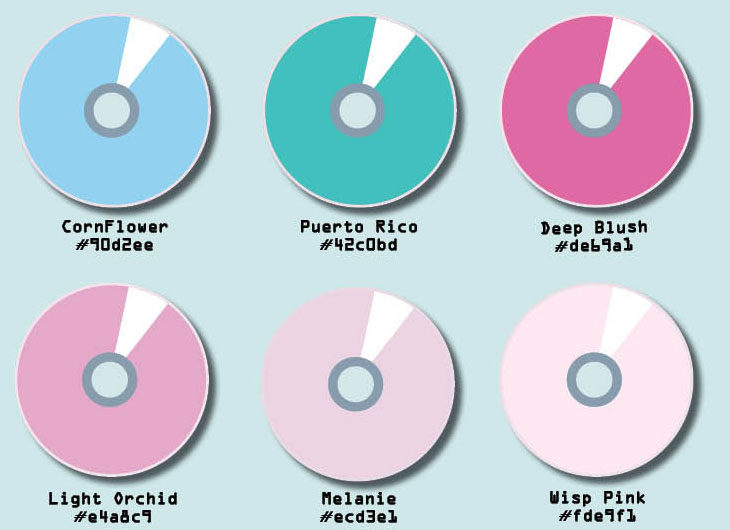
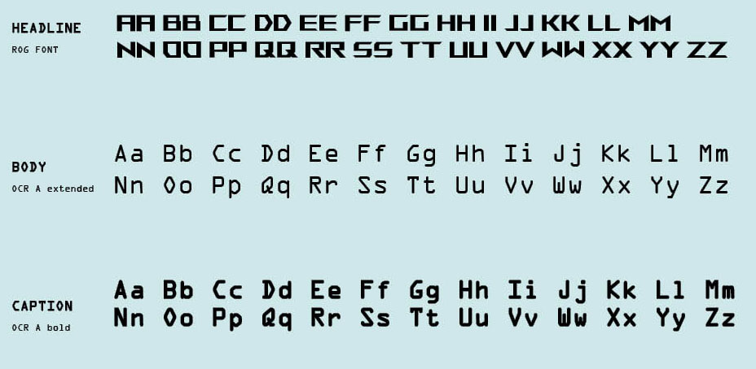
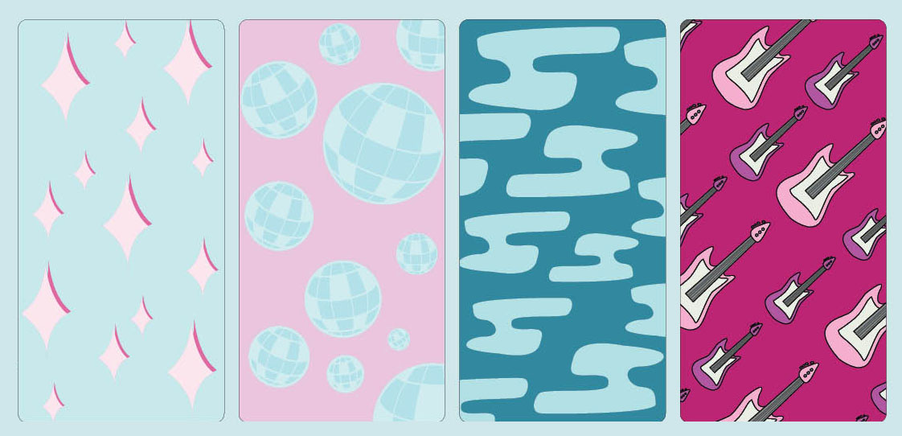
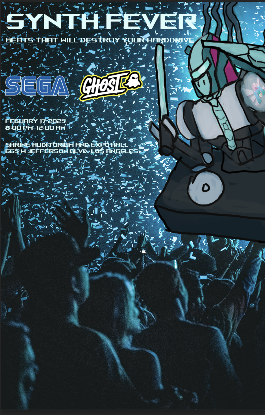
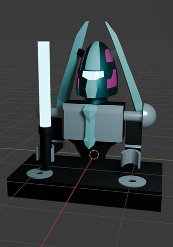
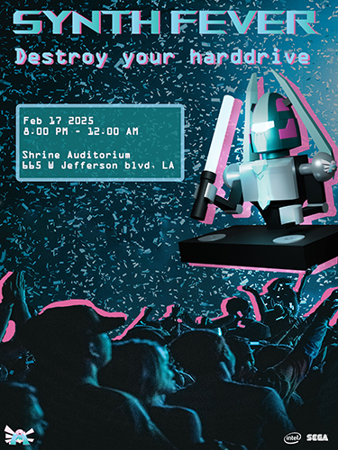

Synth Fever
Winter 2025
Adobe Illustrator, Photoshop, Indesign, Blender
This is a school project not made for profit. The student responsible doesn't own intellectual property of nor is affiliated with Crypton or Yamaha.
Challenge Statement: Create branding for a unique festival experience that celebrates the music culture of the 2000s through the combination of vocaloid and electronic genres of music.
Solution Statement: After choosing Vocaloid for one genre and being assigned electronic at random. I started by researching both genres to find points where they intersect. As I did my research I began sketching my concepts for a logo of this concert focusing on ideas such as concert/rave culture, and robotic nature behind both genres. After a process of both sketching out logos and turning them into vector art in adobe illustrator, I decided on a logo with the head of a figure resembling hatsune miku, a famous vocaloid figure, with a cd behind it which also taps into some of the 2000's era imagery that both genres were grew in. The title for the concert I decided to be titled Synth Fever, originally I wanted to call it Night Fever after a popular vocaloid song, since the name implies the night time rave like culture both electronic and vocaloid music has, but decided to change it after several group discussions pointed out how Luka, the vocaloid associated with the song was not present in the logo. After critique, I made changes to the logo to address criticisms such as feeling too flat and lacking movement.

The next phase of the project involved further building out the brand of the concert to create a style guide. This involved each of us for our concerts deciding how our brand should be presented in promotional material and how it would be shown in theory if it was being promoted by other companies. The most important elements of the style guide included the color pallet, in which I went with a set of blues and pinks to have cool, almost night time esque vibe that can also represent the cold nature of machines, and pink, as an ascent to make things pop and to evoke the pastel nature of material associated with vocaloids in particular. As for the text I decided to go with the fonts shown below for how they both look with each other and how they convey a "techy" asthetic while still being legible. The patterns made in the style guide also consisted of visual elements that can be used in promotional material and they consist of elements that were pulled from scrapped ideas for Synth Fevers logo.
  After the branding came one of the most important parts of the project, making the premotional poster for the concept, along with 3 online advertisements. After schetching out several thumbnails, I decided on making a poster that features a mascot of sorts in the form of a robot dj,with the poster it self containing a scene of the dj performin in a live consort. Based on feedback from the TA of the class, I added elements to the mascot to give it more vocaloid elements. We also had to choose 2 pre-existing brands as sponsors for the event, as a way to challenge us by working with pre existing elements. Originally I went for SEGA and Ghost, a brand known for energy drinks, before swapping Ghost with Intel in later iterations of the poster. The poster was originally made with a combiniation of stock imagery and a digitally hand drawn dj robot in photoshop but I was not happy with the results.
This then lead me to the idea of using my background in 3d modeling software, in particularly blender, to create a simple model for the dj to use in a poster instead, since I felt with 3d modeling it would be able to better create the clean manufactured looking edges that a robot would have compared to what I was trying to draw. It also ment that I can reuse the model in different angles that I can use to give the avertisements more variety.
After making my model I created several renders to put it into photoshop and made some tweaks to make it work with the rest of the poster and bring in more of the color pallet I made in the previous part of the project. After being shown to the instructor, I received feed back to tighten up the typography in the poster which I did through making a text box that had both better visibiity and leaned into the tech/computer asthetic
As for the ads, we needed to have them represent the 3 common formats for adds seen online. For them I focused on having large text and featuring the robot mascot with renders from several angles to have variety between them compared to each other and the poster.
After the poster and ads were done, the last part of the project, was making the festivity kit, which was meant to have several examples of what merch could look like. One of the main focuses for me was having a good wearable, that could also be made with 3d modeling. In the end I decided to go with headphones since it was common imagery among both genres and could serve as a product that could theoretically be used practically outside the concert's setting. I modeled a normal set of headphones in blender and then added the robotic pigtails of the robot dj to the top, which was inspired by ehadphones with things like cat ears on them made by companies like razor, and then I added on both sides an altered version of the robot dj's face featureing glowing blue and pink elements to convey a glowstick like feeling, along with feeling more machine like, as seen with procusts that use rgb lights like gaming keyboards and mice.
Lastly I went with atotebag to round out my selection of merch, as it was a staple for concert events. This I kept simple with a pink totebag with the concert logo on the front, and a design featuring elements of the logo and a part of a pattern form the stile guide on the back to make it clear which side is which
This project taught me a lot about how the process of creating a brand works and the elements that needed to be considered in the process, as well as how to complement it with pre existing brands. It also further cemented the purpose of critique in my mind as a lot of this project would not have been able to be realized without critisicsm and feedback from my peers, my TA, and my Instructor. One of the biggest take aways I had from this project was how different softwares can be used together to create a single image instead of doing everything in one software, and how I can use strengths of mine such as 3d modeling skills to enhance my graphic design projects.